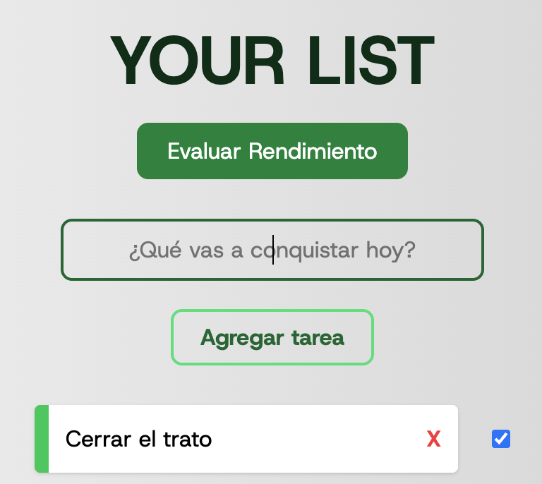

Project 1
Gestión de tareas y lógica JavaScript. Un proyecto práctico y responsive para controlar listas de pendientes con funciones de agregar y borrar.
 HTML
HTML
 Inglés B1
Inglés B1

A mis 24 años, he aprendido que el código no es solo sintaxis,
sino la herramienta para resolver cualquier problema.
Trasladé 7 años de disciplina en entornos de alto
rendimiento al desarrollo de software, donde llevo más de un año construyendo soluciones digitales.
Como Desarrollador Junior, mi enfoque va más allá de 'hacer que funcione'; busco entender el por qué y optimizar el resultado final.
Me apasiona la intersección entre la tecnología, los negocios y el deporte, con la visión a largo plazo de liderar proyectos que fusionen innovación digital y gestión deportiva profesional.